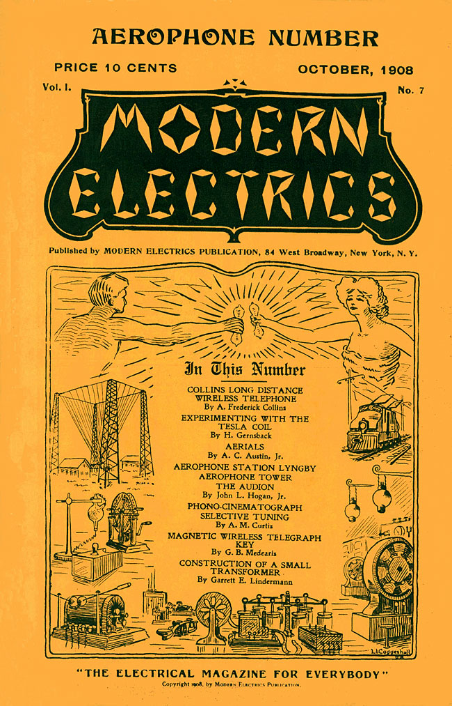
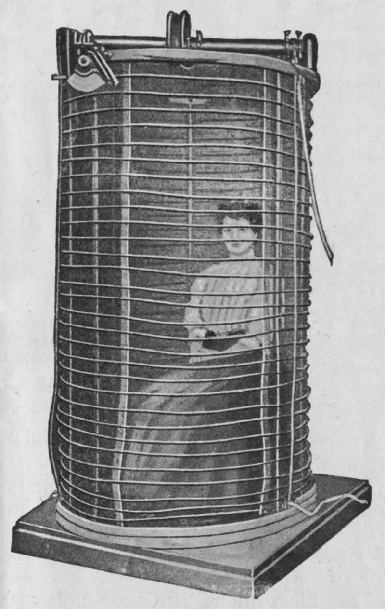
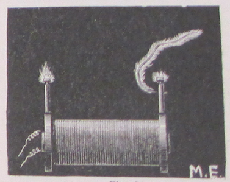
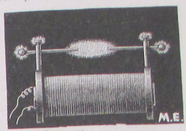
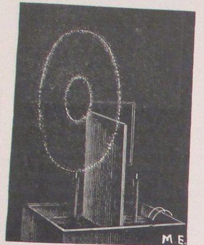
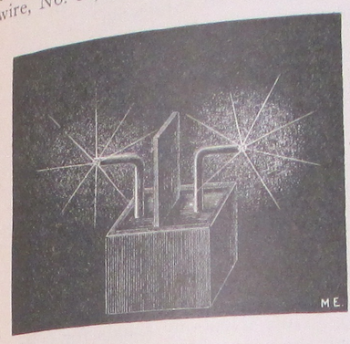
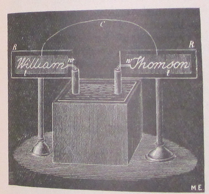

\[The Aerophone Number\]
*Modern Electrics*, vol. 1 no. 7 , October 1908
DRAFT: Please do not share without permission of the author. Typeset versions in web | pdf | doc

It affords the Editor great pleasure to present to his readers herewith the first “Aerophone” number.
As is most likely the case a good many readers were surprised at this title, and an explanation is due.
We have grown so accustomed to the word “telephone” that we use it over and over without being conscious that it really means “far voice.” You will say: “I shall telephone you,” but nobody would think to say: “I shall far-voice you.”
A short word has long been needed to express what is known now under name of “wireless telephone.”
It sounds decidedly odd to say: “I shall wireless telephone you,” or I shall telephone you wirelessly.”
The word “radio-telephone” expresses the idea a good deal better, but still it sounds strange if we say: “I shall radio-telephone you.” Better would be the shorter word “radiophone.” But it does not seem to sound quite right when we say: “I shall radiophone you,” or: “I have received a radiophonic message.”1
Somehow or other it sounds harsh. The Editor suggests the word “Aerophone,” which not alone sounds well, and is easily remembered, but expresses the idea correctly. Translated it means: “air-voice.” In other words, talking through the air, while telephony stands for talking over the wire. The word radiophone does not convey the idea that no wire is used, while Aerophone does.
The words, Aerophone, Aerophony, Aerophonic, sound good, and are to the point.
As will be seen by perusing this issue, the new word has been used almost throughout and the Editor shall continue to use it until a better one is found, or until another word is universally adopted.
The Editor shall furthermore be grateful if every reader would have the kindness to drop him a postal card stating which word he desires to become universal.
Results will be published in next issue.
MODERN ELECTRICS claiming several records, with this issue adds a new one to its list. No magazine heretofore issued an “Aerophone Number,” or a “Wireless Telephone Number,” the honor belonging entirely to MODERN ELECTRICS, leading, as usual.

The accompanying illustration is not a gigantic sending helix to be used in wireless telegraphy, but it actually keeps a good many people from dying annually. At first thought this statement sounds somewhat doubtful, but it is nevertheless the truth.
A good many people suffer with a dreadful disease known as arteric sclerosis, which causes the arteries to lose their elasticity, and to assume a rigidity medically known under the name of “pipestem artery.” Not alone old people, but also the young are liable to be thus affected, the patient usually dying through bursting of the arteries.
While hypertension (another name for the disease) can be counteracted by drugs, the improvement thus effected is only of short duration.
Hypertension is caused through slow and poor nutrition, or where nutrition has been retarded through intoxicants, such as alcoholic or tobagic, or where too much uric acid is in the blood.
Now the Frenchmen, D’Arsonval and later Mortier, found that by subjecting patients suffering with arteric sclerosis to high tension currents, the hardening of the arteries could be actually stopped and brought back to their former degree of elasticity.
The patient is usually seated in a sort of helix formed of heavy wire. The cage itself has a pulley on top, as seen in illustration, by which it is raised up and down over the head of the person to be treated.
High tension currents of enormous frequency are then passed through the helix, and the patient, sitting on a chair, is bathed with torrents of the electrical fluid. His body is covered with sparks and brush discharge, in fact, he is the center of a veritable storm of fireworks. The strangest part, however, is that he feels nothing whatsoever, and he or she may read or talk, drink and eat if desired. After 30 minutes the patient leaves the cage, and finds the arterial tension very much improved.
Six to ten sittings are required to bring the tension back to the normal point. The cure, however, is not permanent, but the patient is out of danger for quite a length of time. As soon as necessary the treatment may be repeated, and so on, till the patient dies of old age, providing he does not acquire another disease in the meanwhile.
These high tension currents have also proved of high value in the treatment of neurasthenia, weak nerves, brain fag, and in practically all nervous diseases.





-
The medium that Gernsback attempts to name here is best understood as an early conceptualization of radio. While the voice had been transmitted wirelessly as early as 1900, most notably by the Canadian inventor Reginald Fessenden using an electrolytic detector (see “The Radioson Detector” for more), a reliable means for accurately sending sound, voice, and music signals was still a ways off. Because the broadcast model of radio we are familiar with today had yet to be imagined, most projections of wireless voice transmission involved a point-to-point model resembling a telephone conversation. “Aerophone” never took off as a name, and other contending names like “wireless telephone” and “radiophone” were eventually simplified to “wireless.” While the term “radio” replaced all of these by the 1920s, today there is a resurgence in the use of “wireless” thanks to new applications of the technology in cellular systems like GSM and CDMA, WiFi, near field communication, and Bluetooth. With hindsight, it’s interesting how the medium of broadcast radio came to be synonymous with the physical transmission of electromagnetic signals through space, even though that very same process provides the operative principle behind a wide range of technologies. See Gernsback’s “Radio Steps Out” on this idea. ↩
Grant Wythoff, editor
grant.wythoff@gmail.com

This work is licensed under a Creative Commons Attribution-NonCommercial-NoDerivatives 4.0 International License.